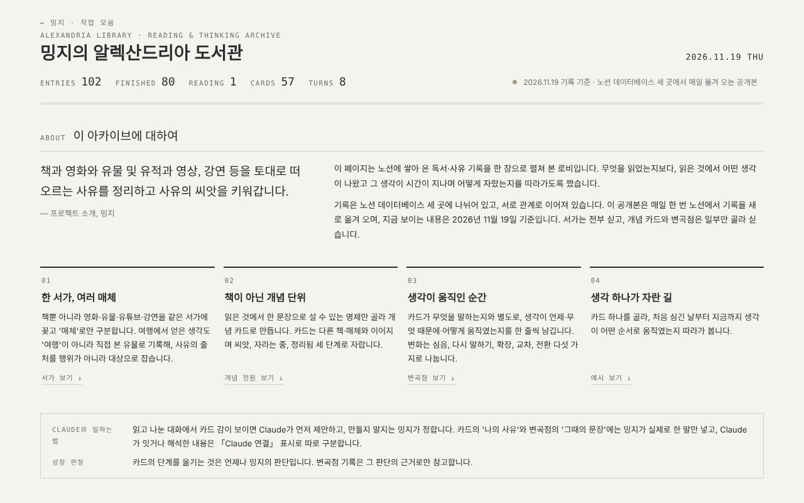
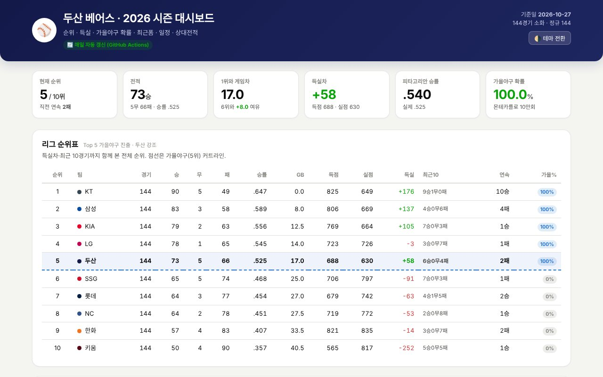
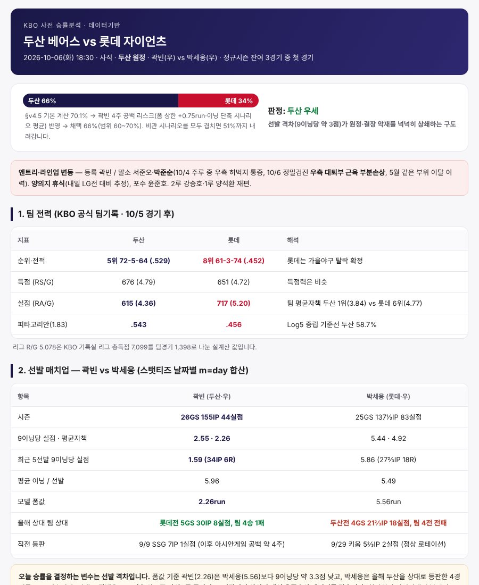
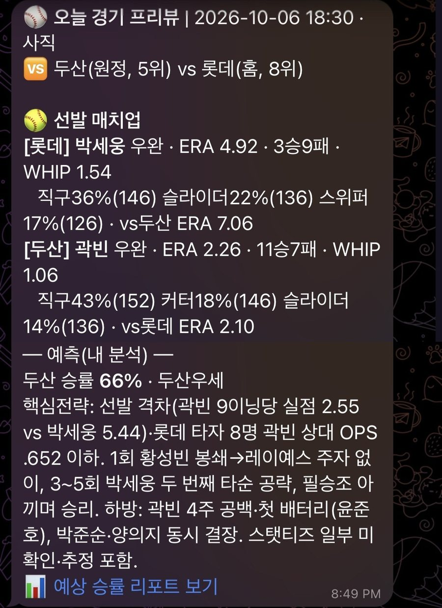
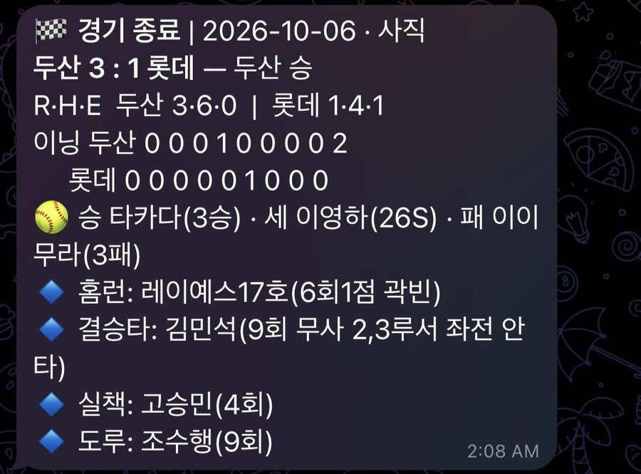
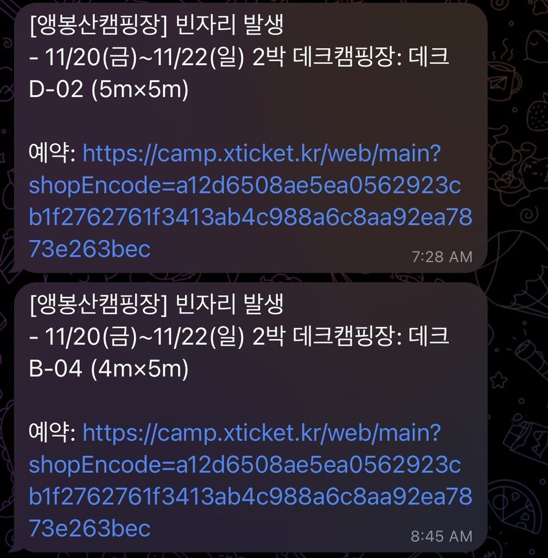
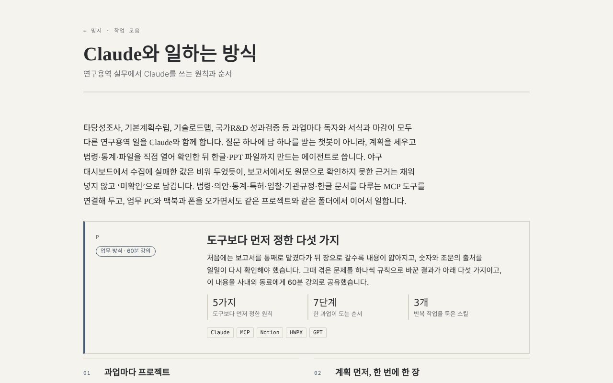

01 · 독서·사유 아카이브
밍지의 알렉산드리아 도서관
읽은 것에서 건진 생각이 언제, 무엇 때문에 움직였는지까지 남깁니다.

- 102서가에 꽂은 책·매체
- 58개념 카드
- 9기록된 사유의 변곡점




03 · 생활 자동화
캠핑장 빈자리 알림
감시 중인 날짜에 빈자리가 나면 1분 안에 텔레그램으로 알려 줍니다.

P · 연구용역 실무
Claude와 일하는 방식
계획을 세우고 원문을 확인해 한글 파일까지 만드는 에이전트로 씁니다.

- 7단계한 과업이 도는 순서
- 7개연결해 둔 공공·문서 도구
- 3대오가며 일하는 기기